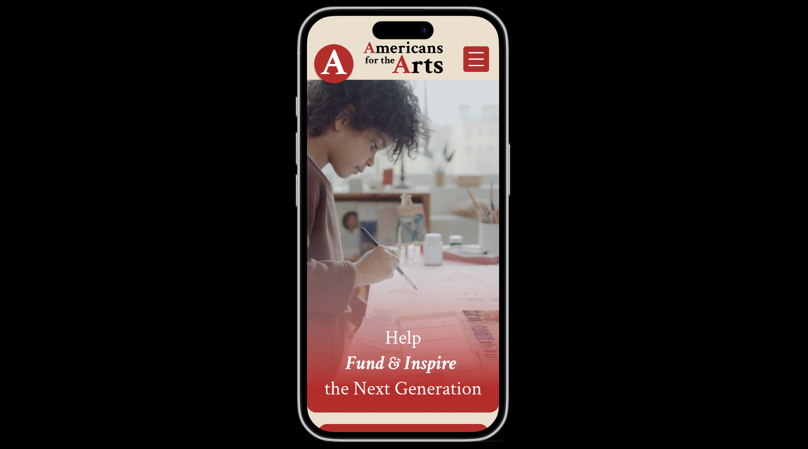

View the Redesign
A UX-focused redesign of Americans for the Arts — simplifying navigation, elevating student artwork, and connecting teachers to the grants and resources they need.


Design Brief
Overview
Americans for the Arts is a nonprofit that supports art education for students across the United States. This redesign modernizes the site, improves usability, and provides clearer access to resources, funding, and community programs for educators.
Persona
Laura Eckman — High School Art Teacher
Mrs. Eckman teaches over 200 students daily and volunteers in local arts organizations. She seeks grants, classroom materials, and ways to support student creativity.
Target Audience
Middle-aged women with a passion for the arts — especially art teachers — represent the core audience. They frequently search for funding and educational support resources.
Problem & Goals
The original website was visually cluttered, with overwhelming navigation and poor hierarchy. Teachers struggled to find grants and resources efficiently, and donation opportunities lacked visibility.
Simplify Navigation
Reduce menu items and streamline user flow so teachers reach grants and resources in fewer clicks.
Highlight Impact
Elevate student artwork and community stories to reinforce the organization's mission on every page.
Modernize Branding
Build a strong national identity with Americana-inspired visuals and increased visibility around donations and membership.
Research Insights
Competitor analysis revealed extremes in design styles — either overly minimalist or overwhelmingly maximalist. Americans for the Arts sat firmly in the maximalist camp, with a cluttered layout that buried key content. Reducing menu items and simplifying the structure became a primary focus.
Branding System
The old identity didn't match the organization's modern American theme or align with their current color scheme. The redesigned branding uses an Americana-inspired palette and school-based typography like Crimson. The updated logo removes unnecessary elements for a cleaner digital presence.
Color Palette
An Americana-inspired system — warm parchment, deep reds, and patriotic navy — grounded in approachability and institutional trust.
Homepage Redesign
A large hero image featuring student artwork creates a strong visual focal point. The donation button is now prominently placed, while card-based sections organize key resources in a simple, minimalistic layout.
Hero Area
Showcases student creativity front and center, making the human impact of the organization immediately visible.
Card Sections
Streamlined card layout organizes grants and programs for fast scanning — no digging required.
Clear Hierarchy
Improved typographic scale and spacing make the page readable at a glance across all screen sizes.
Mobile-First Approach
Designing for Small Screens First
Designing mobile-first ensured clarity and accessibility. A sliding hamburger menu keeps the homepage clean while maintaining full navigation options — then expanding into a richer layout on larger screens.
Reflection
This project deepened my understanding of UX research, wireframing, and content structure. Early planning proved essential for a more intentional design process — understanding who Laura is before picking a single color made every subsequent decision easier to justify.
Impact
The redesign makes resources easier for teachers to access and strengthens community engagement, ultimately supporting arts education nationwide.
Possible future enhancements include state hover effects for the interactive map, stronger visual feedback throughout, and a global search feature for quick navigation.